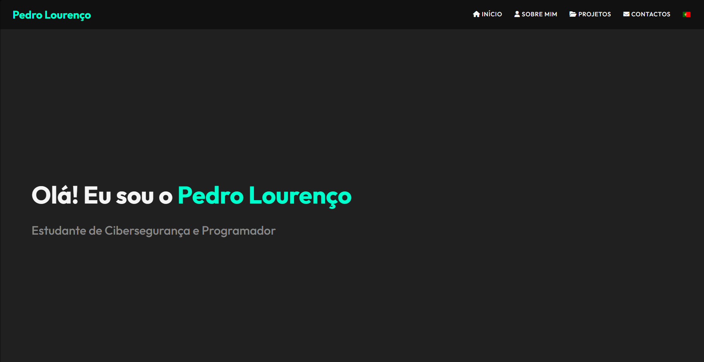
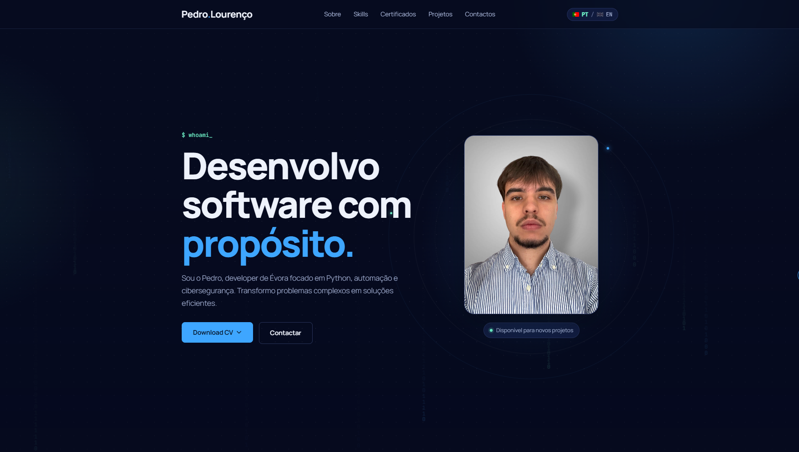
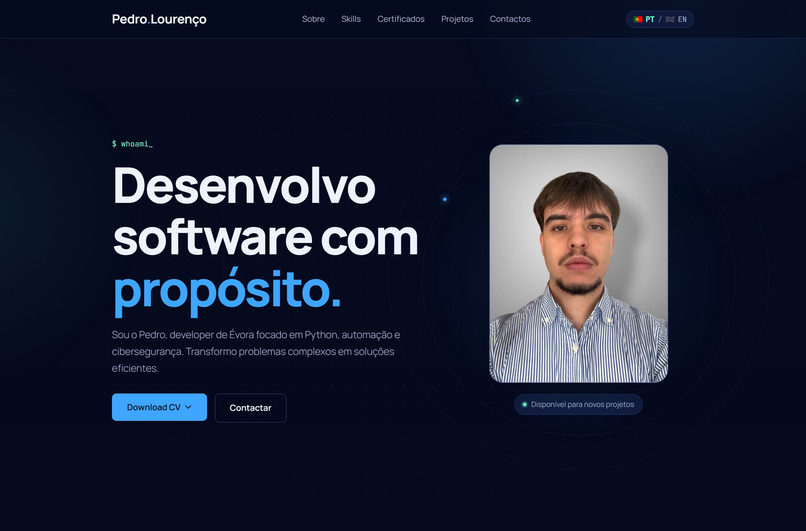
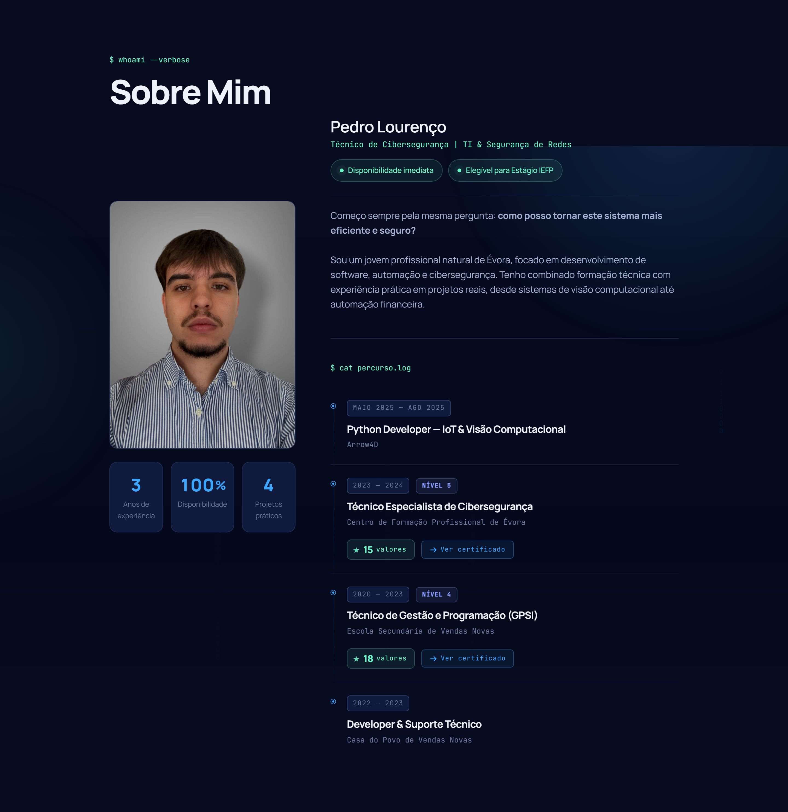
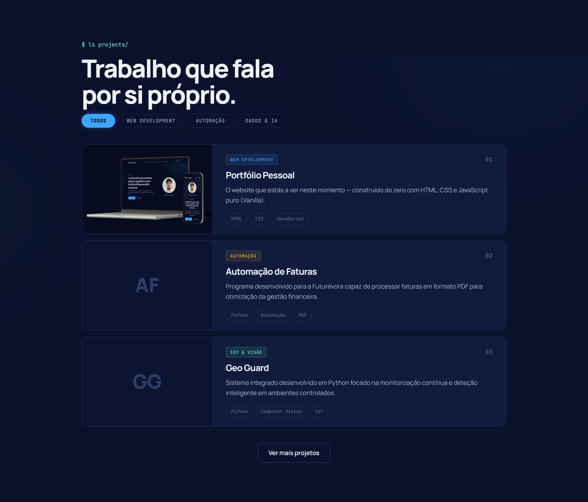
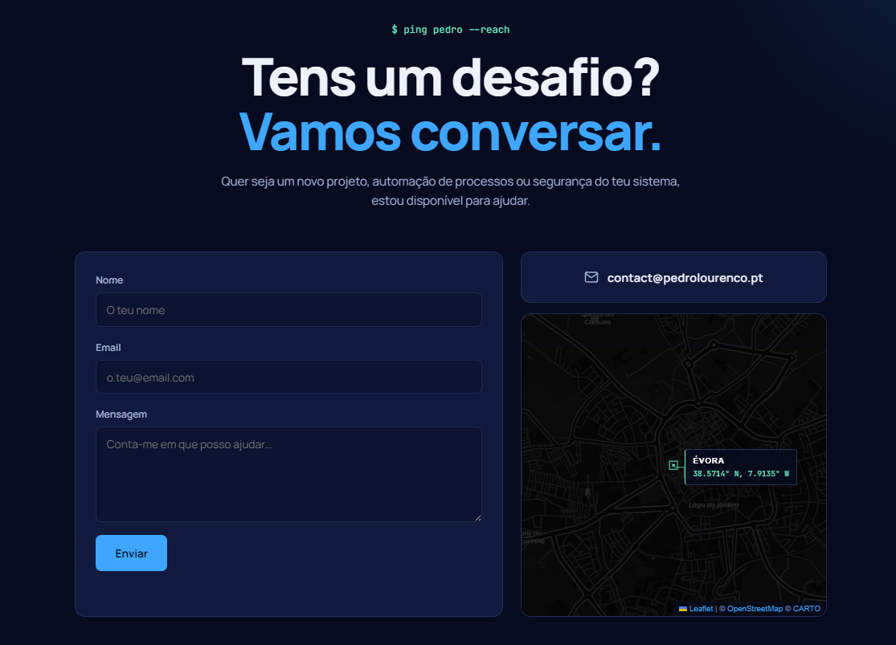

Vercel
Alojamento pensado para frontend, ligado ao GitHub. Cada push gera um novo deploy automático e uma pré-visualização, sem passos manuais.
$ cat portfolio.md
O site que estás a ver é o meu projeto mais pessoal: HTML, CSS e JavaScript puro, sem frameworks nem templates. Queria que carregasse depressa, se lesse bem em qualquer ecrã e mostrasse como penso e construo.

$ cat overview.txt
Precisava de uma presença online à altura do meu perfil técnico: rápida, segura e fácil de manter. Em vez de partir de um template, desenhei o sistema visual, escrevi todo o código e configurei a infraestrutura de ponta a ponta. O resultado é um site leve, bilingue e sem dependências pesadas, que posso evoluir a qualquer momento.
Sem frameworks: HTML, CSS e JavaScript puro mantêm o peso da página no mínimo.
Interface PT/EN com deteção do idioma do browser e preferência guardada entre visitas.
Navegação por teclado, foco visível, bom contraste e respeito por quem reduz o movimento no sistema.
Cursor personalizado, contadores tipo odómetro e animações ao scroll que guiam o olhar sem distrair.
$ diff v1 v2
A primeira versão do portfólio era rudimentar e servia apenas para marcar presença online. Nesta segunda versão reconstruí tudo do zero: um sistema de design coerente, código organizado por responsabilidades e uma interface mais madura. Arrasta o seletor para ver a diferença.


Arrasta para comparar as duas versões
De um layout improvisado para um sistema visual consistente, com tokens de cor, tipografia Manrope e componentes reutilizáveis.
De ficheiros soltos para uma base separada em HTML, CSS e JavaScript, com dicionário de traduções e funções independentes.
De uma página estática para uma interface viva, com filtros de projetos, animações ao scroll, mapa interativo e formulário funcional.
$ ls views/
Alguns dos ecrãs que definem a experiência, do desktop ao telemóvel.



$ ./deploy.sh
Um site rápido também depende de onde e como é servido. Combinei três peças para que cada push para o GitHub chegue ao visitante de forma automática, segura e com cache global.
Alojamento pensado para frontend, ligado ao GitHub. Cada push gera um novo deploy automático e uma pré-visualização, sem passos manuais.
Gere o DNS e distribui o conteúdo por uma CDN global. Ajuda a proteger o site de tráfego malicioso e coloca imagens e estilos em cache perto de quem visita.
Domínio próprio para a minha marca pessoal, com registos A e CNAME a apontar para a Vercel e HTTPS ativo.
$ fetch --post api
A secção de contactos envia mensagens sem servidor próprio. O formulário usa a API do Web3Forms através da Fetch API: os dados seguem de forma assíncrona e o email chega-me diretamente, enquanto o visitante recebe confirmação de sucesso ou erro na própria página.
const res = await fetch('https://api.web3forms.com/submit', {
method: 'POST',
headers: { Accept: 'application/json' },
body: new FormData(form)
});
const { success } = await res.json();
$ exit 0
Construir sem frameworks obrigou-me a perceber o que cada linha faz: gestão de estado no DOM, acessibilidade, performance e deploy contínuo. É a base sobre a qual continuo a evoluir.
Explora os outros projetos ou diz-me em que posso ajudar.